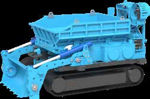
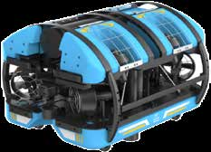
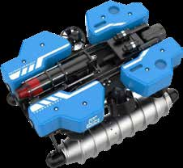

从清淤到检测，再到复杂带水环境作业，形成覆盖不同口径、流速和淤积工况的智能装备组合。

针对箱涵、明渠、水利闸门和工业水池等场景，采用铲储一体化设计，适配大型排水管网清淤和障碍物清理任务。

可搭载环扫声呐、多波束声呐和高清摄像模块，用于识别错口、变形、破损和淤积等缺陷。

面向 DN1500 以上高流速、长距离带水检测场景，集成声、光、电磁等检测手段，实现低能见度环境识别。
以下内容从产品手册中提炼后重新编排，方便在门户内直接展示和讲解。
装载式箱涵清淤机器人支持长时间连续作业，可在高强度作业周期下保持稳定效率，适合箱涵和大型通道类场景。
两栖检测机器人适用于高淤积、高水位、有限空间环境，可联动声呐和高清视频实现多维度检测。
大型带水检测机器人面向长距离、浑水、高流速场景，适合干线管道和重点骨干管网专项检测。
通过机械化、无人化替代高风险人工作业，在保障安全的同时兼顾作业单价和项目总体经济性。
高淤积、板结淤泥、垃圾混杂等需要强作业能力的清淤场景。
有限空间、复杂断面和高水位条件下的缺陷排查与结构检测。
DN1500 以上骨干管道的长距离带水检测和专项排查。
先检测、再处置、再复核，适合与智慧管网平台打通形成闭环。
可将现场影像、缺陷点位和作业结果回传至平台，支撑复盘与档案沉淀。
对城市管网治理项目来说，更适合作为“装备能力 + 数据能力”一起展示。
装备可与现场管理系统协同，形成从踏勘到实施再到复核的标准化流程。
根据管径、水位、流速和淤积情况，选定装备组合与作业路径。
通过声呐、摄像和定位模块采集缺陷与淤积数据，识别重点问题段。
按处置优先级开展清障、清淤和检修作业，提高现场处置效率。
复测作业成果，沉淀影像、缺陷和工况数据，便于追踪与复盘。
本页内容根据《绿投科技产品推介手册》中“管网清检修智能化作业装备”章节提炼整理，并进行了网页化编排，便于在门户站点内直接展示产品能力、关键参数与适用场景。